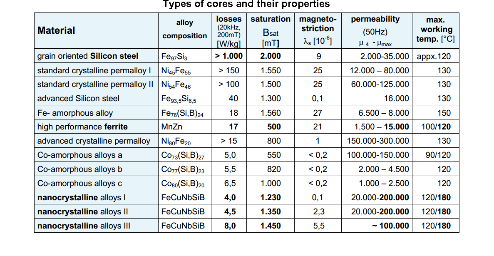
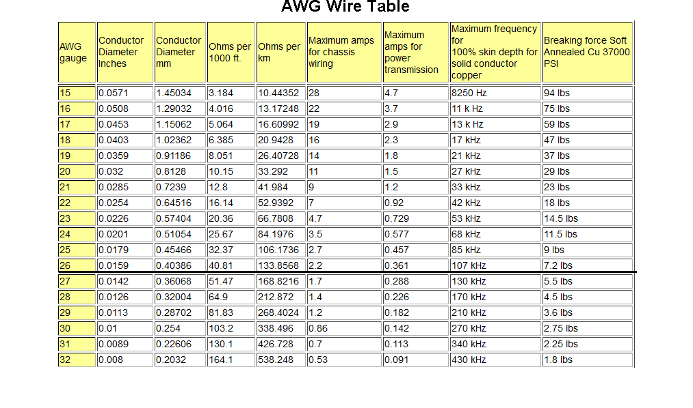
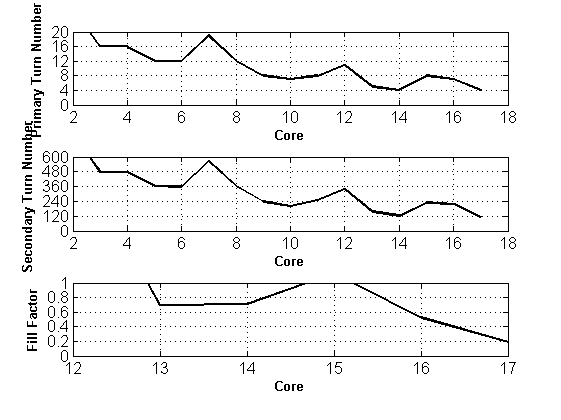
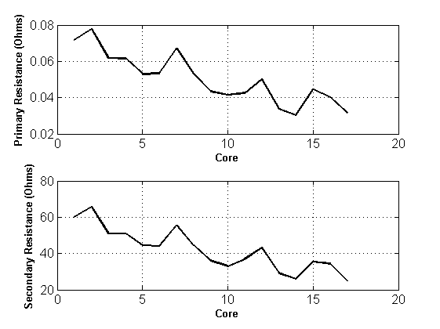
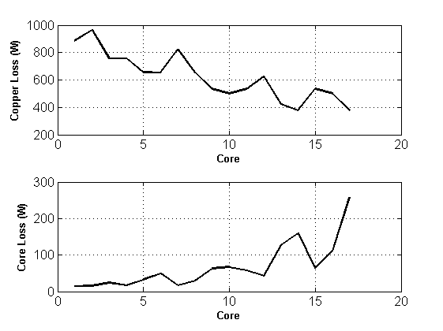
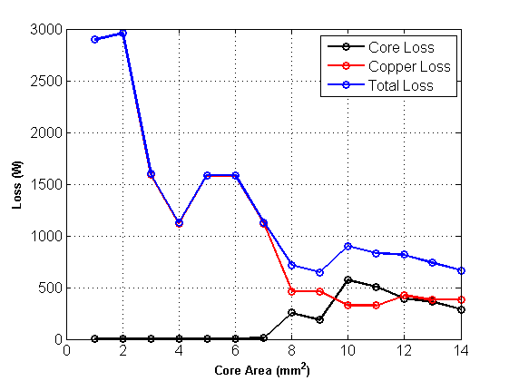
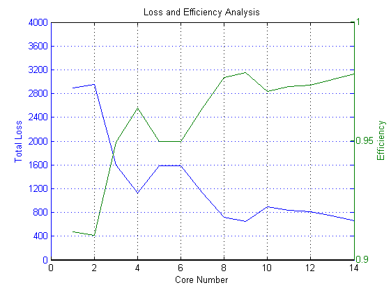
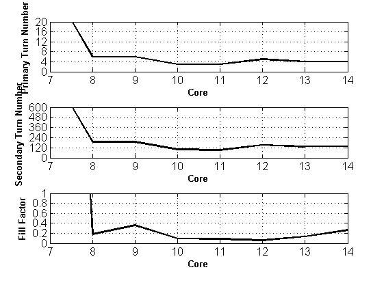
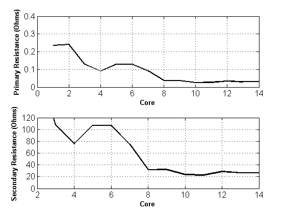
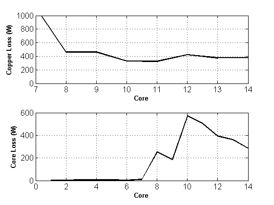

EE564 - Design of Electrical Machines
Contents
Project-1: Transformer Design for X-Rays
Mesut Uğur ID: 1626753
Specifications
X-ray transformer
Single-phase, high frequency, high voltage
Primary Winding Voltage ± 417 V (peak to peak 834 V for pulsing)
Secondary Winding Voltage ± 12.5 kV (peak to peak 25 kV for pulsing)
Rated Power 30 kW (for maximum 100 millisecond)
Switching Frequency Minimum 100 kHz
Ambient Temperature 0-40 °C
Inputs
Vin_peak = 417; Vpri_peak = Vin_peak*4/pi; Vpri_rms = Vpri_peak/sqrt(2); Vout_peak = 12500; Vsec_peak = Vout_peak*4/pi; Vsec_rms = Vsec_peak/sqrt(2); Pout = 30000; Ipri_rms = Pout/Vpri_rms; Isec_rms = Pout/Vsec_rms;
OBSOLETE
Area product calculation c = 2.82e-3; % cm^2/Amps efficiency = 0.98; B = 0.5; frequency = 100e3; K = 0.7; area_product = Pin*c*1e8/(4*efficiency*B*frequency*K)
Core material selection FERRITE
Core shape selection Double E
Core geometry selection 49928
Core Type (material) P type
Core Data
AL = 6773; % nH/turn le = 274; % mm Ac = 738; % mm^2 Ve = 202e3; % mm^3 WaAc = 90.6; % cm^4 Wa = WaAc*1e4/Ac; % mm^2
Winding Data AWG#26 for 100 kHz
conductor_diameter = 0.40386; % mm conductor_area = (conductor_diameter/2)^2*pi; % mm^2 ohms_per_km = 133.8568; % ohm/km current_rating = 0.361; % Amps strand_primary = ceil(Ipri_rms/current_rating); strand_secondary = ceil(Isec_rms/current_rating);
Skin Depth Calculation
frequency = 100e3; mu_r = 0.999994; mu_0 = 4*pi*1e-7; resistivity = 1.68e-8; w = 2*pi*frequency; delta = 1000*sqrt(2*resistivity/(w*mu_r*mu_0)); % mm % Conductor radius is less than the skin depth => No skin effect
Proximity Effect Neglected for now...
turn number calculation
flux_density = 0.3; % Tesla flux = flux_density*Ac/1e6; % Weber frequency = 100e3; Npri = round(Vpri_rms/(4.44*frequency*flux)); Nsec = round(Vsec_rms/(4.44*frequency*flux));
winding areas
area_pri_winding = Npri*strand_primary*conductor_area; % mm^2 area_sec_winding = Nsec*strand_secondary*conductor_area; % mm^2 fill_factor = (area_sec_winding + area_sec_winding)/Wa;
Core loss
% specific_core_loss = 1; % W/cm^3 % core_loss = specific_core_loss*Ve/1e3; % Watts
Using curve fitting P material @80 Cdegrees
a = 0.0434; c = 1.63; d = 2.62; f = 100; B = 0.3*10; % kilogtauss PL = a*f^c*B^d; % mW/cm^3 core_loss = PL*Ve/1e6; % Watts
Copper loss
mean_length_turn = 11*1.2; % cm length_pri = Npri*mean_length_turn; % cm ohms_km_pri = ohms_per_km/strand_primary; resistance_pri = ohms_km_pri*length_pri/1000; % ohms length_sec = Nsec*mean_length_turn; % cm ohms_km_sec = ohms_per_km/strand_secondary; resistance_sec = ohms_km_sec*length_sec/1000; % ohms copper_loss_pri = Ipri_rms^2*resistance_pri; copper_loss_sec = Isec_rms^2*resistance_sec; copper_loss = copper_loss_pri+copper_loss_sec;
Total loss
total_loss = core_loss + copper_loss; efficiency = 100*Pout/(total_loss+Pout);
Mass calculation
core_mass = 980; % grams copper_volume_pri = length_pri*strand_primary*conductor_area*1e-2; % cm^3 copper_volume_sec = length_sec*strand_secondary*conductor_area*1e-2; % cm^3 copper_density = 8.96; % g/cm^3 copper_mass_pri = copper_volume_pri*copper_density; % grams copper_mass_sec = copper_volume_sec*copper_density; % grams copper_mass = copper_mass_pri + copper_mass_sec; % grams
Magnetizing inductance AL = 6773; % nH/turn Lpri = 1e-3*AL*Npri; % uH Lsec = 1e-3*AL*Nsec; % uH
Magnetic field intensity calculation relative permeability figure
I = imread('permeability.png'); figure; imshow(I); mur = 4000; % from the figure provided by magnetics mu0 = 4*pi*1e-7; mu = mur*mu0; reluctance = le*1e-3/(Ac*1e-6*mur*mu0); % H^-1 H = flux_density/mu; % Amperes mmf_drop = H*le/1000; magnetizing_current = mmf_drop/Npri; % MMFpri = Npri*Ipri_rms*sqrt(2); % MMFsec = Nsec*Isec_rms*sqrt(2); sec_current_peak = (Npri*Ipri_rms*sqrt(2)-flux_density*Ac*1e-6*reluctance)/Nsec;
Flux density of harmonic components
harmonic = 1:2:31; total = numel(harmonic); voltage_rms = zeros(1,total); flux_density_harmonic = zeros(1,total); for k = 1:total voltage_rms(k) = (4/pi)*(1/sqrt(2))*Vin_peak/harmonic(k); flux_density_harmonic(k) = voltage_rms(k)/(4.44*Npri*frequency*harmonic(k)*Ac/1e6); end
Core loss for harmonics Using curve fitting
PL_h = zeros(1,total); core_harmonic_loss = zeros(1,total); for k = 1:total PL_h(k) = a*(f*harmonic(k))^c*(flux_density_harmonic(k)*10)^d; % mW/cm^3 core_harmonic_loss(k) = PL_h(k)*Ve/1e6; % Watts end total_core_loss = sum(core_harmonic_loss(:)); % Watts
ONCE UPON A TIME IN AN ALTERNATE UNİVERSE NOT THAT FAR AWAY
The following is the analysis with 17 different types of Double E ferrite
inputs
Vin_peak = 417; Vpri_peak = Vin_peak*4/pi; Vpri_rms = Vpri_peak/sqrt(2); Vout_peak = 12500; Vsec_peak = Vout_peak*4/pi; Vsec_rms = Vsec_peak/sqrt(2); Pout = 30000; Ipri_rms = Pout/Vpri_rms; Isec_rms = Pout/Vsec_rms; % core data elements = 17; core = 1:17; core_length = [76.7,98.4,97,67.1,97,145,77,88.9,124,123,107,110,147,149,137,184,274]; %mm core_area = [127,107,178,177,233,236,149,234,353,420,337,248,540,683,368,392,738]; %mm^2 core_volume = [9780,10500,17300,11900,22700,34200,11500,20800,44000,52000,36000,27200,79000,102000,50300,72300,202000]; %mm^3 area_product = [1.26,1.65,3.55,1.36,4.22,6.36,1.88,3.3,9.78,12.1,6.98,5.74,23.5,23.3,15,31.6,90.6]*1e4; %mm^4 core_weight = [49,52,87,60,114,164,57,103,212,255,179,135,410,495,250,357,980]; %grams window_area = area_product./core_area; %core_area = 100:10:2000; % mm^2 %window_area = 1.5*core_area; % mm^2 flux_density = 0.3; % Tesla flux = flux_density*core_area/1e6; % Weber frequency = 100e3; Npri = round(Vpri_rms./(4.44*frequency*flux)); Nsec = round(Vsec_rms./(4.44*frequency*flux)); conductor_diameter = 0.40386; % mm conductor_area = (conductor_diameter/2)^2*pi; % mm^2 ohms_per_km = 133.8568; % ohm/km current_rating = 0.361; % Amps strand_primary = ceil(Ipri_rms/current_rating); strand_secondary = ceil(Isec_rms/current_rating); area_pri_winding = Npri*strand_primary*conductor_area; % mm^2 area_sec_winding = Nsec*strand_secondary*conductor_area; % mm^2 fill_factor = (area_sec_winding + area_sec_winding)./window_area; mean_length_turn = 4*sqrt(core_area)*1.2/10; % cm length_pri = Npri.*mean_length_turn; % cm ohms_km_pri = ohms_per_km/strand_primary; resistance_pri = ohms_km_pri*length_pri/1000; % ohms length_sec = Nsec.*mean_length_turn; % cm ohms_km_sec = ohms_per_km/strand_secondary; resistance_sec = ohms_km_sec*length_sec/1000; % ohms copper_loss_pri = Ipri_rms^2*resistance_pri; copper_loss_sec = Isec_rms^2*resistance_sec; copper_loss = copper_loss_pri+copper_loss_sec; % Using curve fitting % P material @80 Cdegrees a = 0.0434; c = 1.63; d = 2.62; f = 100; % kHz B = 0.3*10; % kilogtauss PL = a*f^c*B^d; % mW/cm^3 core_loss = PL*core_volume/1e6; % Watts harmonic = 1:2:31; total = numel(harmonic); voltage_rms = (4/pi)*(1/sqrt(2))*Vin_peak./harmonic; for l = 1:elements for k = 1:total flux_density_harmonic = voltage_rms(k)/(4.44*Npri(l)*frequency*harmonic(k)*core_area(l)/1e6); PL_h = a*(f*harmonic(k))^c*(flux_density_harmonic*10)^d; core_harmonic_loss(l,k) = PL_h*core_volume(l)/1e6; end total_core_loss(l) = sum(core_harmonic_loss(l,:)); end total_loss = copper_loss + total_core_loss; efficiency = Pout./(total_loss+Pout); efficiency1 = efficiency; figure; subplot(3,3,1); plot(core,Npri,'k- ','Linewidth',1.5); grid on; set(gca,'FontSize',12); xlabel('Core Area (mm^2)','FontSize',10,'FontWeight','Bold'); ylabel('Primary Turn Number','FontSize',10,'FontWeight','Bold'); subplot(3,3,4); plot(core,Nsec,'k- ','Linewidth',1.5); grid on; set(gca,'FontSize',12); xlabel('Core Area (mm^2)','FontSize',10,'FontWeight','Bold'); ylabel('Secondary Turn Number','FontSize',10,'FontWeight','Bold'); subplot(3,3,7); plot(core,fill_factor,'k- ','Linewidth',1.5); grid on; set(gca,'FontSize',12); xlabel('Core Area (mm^2)','FontSize',10,'FontWeight','Bold'); ylabel('Fill Factor','FontSize',10,'FontWeight','Bold'); ylim([0 1.1]); subplot(3,3,2); plot(core,resistance_pri,'k- ','Linewidth',1.5); grid on; set(gca,'FontSize',12); xlabel('Core Area (mm^2)','FontSize',10,'FontWeight','Bold'); ylabel('Primary Resistance','FontSize',10,'FontWeight','Bold'); subplot(3,3,5); plot(core,resistance_sec,'k- ','Linewidth',1.5); grid on; set(gca,'FontSize',12); xlabel('Core Area (mm^2)','FontSize',10,'FontWeight','Bold'); ylabel('Secondary Resistance','FontSize',10,'FontWeight','Bold'); subplot(3,3,3); plot(core,copper_loss,'k- ','Linewidth',1.5); grid on; set(gca,'FontSize',12); xlabel('Core Area (mm^2)','FontSize',10,'FontWeight','Bold'); ylabel('Copper Loss (W)','FontSize',10,'FontWeight','Bold'); subplot(3,3,6); plot(core,total_core_loss,'k- ','Linewidth',1.5); grid on; set(gca,'FontSize',12); xlabel('Core Area (mm^2)','FontSize',10,'FontWeight','Bold'); ylabel('Core Loss (W)','FontSize',10,'FontWeight','Bold'); subplot(3,3,9); plot(core,total_loss,'k- ','Linewidth',1.5); grid on; set(gca,'FontSize',12); xlabel('Core Area (mm^2)','FontSize',10,'FontWeight','Bold'); ylabel('Core Loss (W)','FontSize',10,'FontWeight','Bold');
subplot(3,3,9); plot(core_area,total_core_loss,'k o','Linewidth',1.5); hold on; plot(core_area,copper_loss,'r o','Linewidth',1.5); hold on; plot(core_area,total_core_loss+copper_loss,'b o','Linewidth',1.5); hold off; grid on; set(gca,'FontSize',12); xlabel('Core Area (mm^2)','FontSize',10,'FontWeight','Bold'); ylabel('Loss (W)','FontSize',10,'FontWeight','Bold'); legend('Core Loss','Copper Loss','Total Loss');
figure; plot(core,total_core_loss,'k-o','Linewidth',1.5); hold on; plot(core,copper_loss,'r-o','Linewidth',1.5); hold on; plot(core,total_core_loss+copper_loss,'b-o','Linewidth',1.5); hold off; grid on; set(gca,'FontSize',12); xlabel('Core Area (mm^2)','FontSize',10,'FontWeight','Bold'); ylabel('Loss (W)','FontSize',10,'FontWeight','Bold'); legend('Core Loss','Copper Loss','Total Loss');
ANOTHER GALAXY
The following is the analysis with 14 different types of U,I ferrite
clearvars -EXCEPT efficiency1
inputs
Vin_peak = 417; Vpri_peak = Vin_peak*4/pi; Vpri_rms = Vpri_peak/sqrt(2); Vout_peak = 12500; Vsec_peak = Vout_peak*4/pi; Vsec_rms = Vsec_peak/sqrt(2); Pout = 30000; Ipri_rms = Pout/Vpri_rms; Isec_rms = Pout/Vsec_rms; % core data elements = 14; core = 1:14; core_length = [29.2,24.6,95.8,68.9,83.4,64.3,83.4,353,257,354,353,480,308,245]; %mm core_area = [12,11.5,39.7,80,40.4,40.3,80.8,452,450,840,905,560,645,645]; %mm^2 core_volume = [350,283,4130,4170,3370,2590,6740,160000,115000,297000,319000,268800,199000,158000]; %mm^3 area_product = [0.02,0.01,0.63,0.78,0.57,0.32,1.13,91.4,45.8,173,185,286,121,60.7]*1e4; %mm^4 core_weight = [1.8,1.5,19,29,17,13,34,800,600,1490,1600,1360,988,784]; %grams window_area = area_product./core_area; %core_area = 100:10:2000; % mm^2 %window_area = 1.5*core_area; % mm^2 flux_density = 0.3; % Tesla flux = flux_density*core_area/1e6; % Weber frequency = 100e3; Npri = round(Vpri_rms./(4.44*frequency*flux)); Nsec = round(Vsec_rms./(4.44*frequency*flux)); conductor_diameter = 0.40386; % mm conductor_area = (conductor_diameter/2)^2*pi; % mm^2 ohms_per_km = 133.8568; % ohm/km current_rating = 0.361; % Amps strand_primary = ceil(Ipri_rms/current_rating); strand_secondary = ceil(Isec_rms/current_rating); area_pri_winding = Npri*strand_primary*conductor_area; % mm^2 area_sec_winding = Nsec*strand_secondary*conductor_area; % mm^2 fill_factor = (area_sec_winding + area_sec_winding)./window_area; mean_length_turn = 4*sqrt(core_area)*1.2/10; % cm length_pri = Npri.*mean_length_turn; % cm ohms_km_pri = ohms_per_km/strand_primary; resistance_pri = ohms_km_pri*length_pri/1000; % ohms length_sec = Nsec.*mean_length_turn; % cm ohms_km_sec = ohms_per_km/strand_secondary; resistance_sec = ohms_km_sec*length_sec/1000; % ohms copper_loss_pri = Ipri_rms^2*resistance_pri; copper_loss_sec = Isec_rms^2*resistance_sec; copper_loss = copper_loss_pri+copper_loss_sec; % Using curve fitting % P material @80 Cdegrees a = 0.0434; c = 1.63; d = 2.62; f = 100; % kHz B = 0.3*10; % kilogtauss PL = a*f^c*B^d; % mW/cm^3 core_loss = PL*core_volume/1e6; % Watts harmonic = 1:2:31; total = numel(harmonic); voltage_rms = (4/pi)*(1/sqrt(2))*Vin_peak./harmonic; for l = 1:elements for k = 1:total flux_density_harmonic = voltage_rms(k)/(4.44*Npri(l)*frequency*harmonic(k)*core_area(l)/1e6); PL_h = a*(f*harmonic(k))^c*(flux_density_harmonic*10)^d; core_harmonic_loss(l,k) = PL_h*core_volume(l)/1e6; end total_core_loss(l) = sum(core_harmonic_loss(l,:)); end total_loss = copper_loss + total_core_loss; efficiency = Pout./(total_loss+Pout); efficiency2 = efficiency; efficiency2(15:17) = 0; figure; subplot(3,3,1); plot(core,Npri,'k- ','Linewidth',1.5); grid on; set(gca,'FontSize',12); xlabel('Core Area (mm^2)','FontSize',10,'FontWeight','Bold'); ylabel('Primary Turn Number','FontSize',10,'FontWeight','Bold'); subplot(3,3,4); plot(core,Nsec,'k- ','Linewidth',1.5); grid on; set(gca,'FontSize',12); xlabel('Core Area (mm^2)','FontSize',10,'FontWeight','Bold'); ylabel('Secondary Turn Number','FontSize',10,'FontWeight','Bold'); subplot(3,3,7); plot(core,fill_factor,'k- ','Linewidth',1.5); grid on; set(gca,'FontSize',12); xlabel('Core Area (mm^2)','FontSize',10,'FontWeight','Bold'); ylabel('Fill Factor','FontSize',10,'FontWeight','Bold'); ylim([0 1.1]); subplot(3,3,2); plot(core,resistance_pri,'k- ','Linewidth',1.5); grid on; set(gca,'FontSize',12); xlabel('Core Area (mm^2)','FontSize',10,'FontWeight','Bold'); ylabel('Primary Resistance','FontSize',10,'FontWeight','Bold'); subplot(3,3,5); plot(core,resistance_sec,'k- ','Linewidth',1.5); grid on; set(gca,'FontSize',12); xlabel('Core Area (mm^2)','FontSize',10,'FontWeight','Bold'); ylabel('Secondary Resistance','FontSize',10,'FontWeight','Bold'); subplot(3,3,3); plot(core,copper_loss,'k- ','Linewidth',1.5); grid on; set(gca,'FontSize',12); xlabel('Core Area (mm^2)','FontSize',10,'FontWeight','Bold'); ylabel('Copper Loss (W)','FontSize',10,'FontWeight','Bold'); ylim([0 1000]); subplot(3,3,6); plot(core,total_core_loss,'k- ','Linewidth',1.5); grid on; set(gca,'FontSize',12); xlabel('Core Area (mm^2)','FontSize',10,'FontWeight','Bold'); ylabel('Core Loss (W)','FontSize',10,'FontWeight','Bold'); subplot(3,3,9); plot(core,total_loss,'k- ','Linewidth',1.5); grid on; set(gca,'FontSize',12); xlabel('Core Area (mm^2)','FontSize',10,'FontWeight','Bold'); ylabel('Core Loss (W)','FontSize',10,'FontWeight','Bold');
figure; plot(core,total_core_loss,'k-o','Linewidth',1.5); hold on; plot(core,copper_loss,'r-o','Linewidth',1.5); hold on; plot(core,total_core_loss+copper_loss,'b-o','Linewidth',1.5); %hold on; %plot(core,efficiency,'m-o','Linewidth',1.5); hold off; grid on; set(gca,'FontSize',12); xlabel('Core Area (mm^2)','FontSize',10,'FontWeight','Bold'); ylabel('Loss (W)','FontSize',10,'FontWeight','Bold'); legend('Core Loss','Copper Loss','Total Loss');
figure;
core = 1:17;
plot(core,100*efficiency1,'r-o','Linewidth',1.5); hold on; plot(core,100*efficiency2,'b-o','Linewidth',1.5); hold off; grid on; set(gca,'FontSize',12); xlabel('Core Area (mm^2)','FontSize',10,'FontWeight','Bold'); ylabel('Efficiency (%)','FontSize',10,'FontWeight','Bold'); ylim([90 100]);
figure [hAx,hLine1,hLine2] = plotyy(core,total_loss,core,efficiency); title('Loss and Efficiency Analysis') xlabel('Core Number') ylabel(hAx(1),'Total Loss') % left y-axis ylabel(hAx(2),'Efficiency') % right y-axis grid on; hLine1.LineStyle = '-'; hLine2.LineStyle = '--'; set(gca,'ytick',[0:400:4000]);
Warning: Struct field assignment overwrites a value with class "double". See MATLAB R14SP2 Release Notes, Assigning Nonstructure Variables As Structures Displays Warning, for details. Warning: Struct field assignment overwrites a value with class "double". See MATLAB R14SP2 Release Notes, Assigning Nonstructure Variables As Structures Displays Warning, for details.
SELECT CORE
E-I Ferrite core from magnetics 49928E-C material: P-type
clear all;
Inputs
Vin_peak = 417; Vpri_peak = Vin_peak*4/pi; Vpri_rms = Vpri_peak/sqrt(2); Vout_peak = 12500; Vsec_peak = Vout_peak*4/pi; Vsec_rms = Vsec_peak/sqrt(2); Pout = 30000; Ipri_rms = Pout/Vpri_rms; Isec_rms = Pout/Vsec_rms;
core data
AL = 6773; % nH/turn core_length = 274; % mm core_area = 738; % mm^2 core_volume = 202e3; % mm^3 area_product = 90.6; % cm^4 window_area = area_product*1e4/core_area; % mm^2
turn numbers
flux_density = 0.3; % Tesla flux = flux_density*core_area/1e6; % Weber frequency = 100e3; Npri = round(Vpri_rms/(4.44*frequency*flux)); Nsec = round(Vsec_rms/(4.44*frequency*flux));
Corrected flux density
flux_density = Vpri_rms/(4.44*Npri*frequency*core_area/1e6);
conductor properties AWG#26
conductor_diameter = 0.40386; % mm conductor_area = (conductor_diameter/2)^2*pi; % mm^2 ohms_per_km = 133.8568; % ohm/km current_rating = 0.361; % Amps
fill factor
strand_primary = ceil(Ipri_rms/current_rating); strand_secondary = ceil(Isec_rms/current_rating); area_pri_winding = Npri*strand_primary*conductor_area; % mm^2 area_sec_winding = Nsec*strand_secondary*conductor_area; % mm^2 fill_factor = 2*(area_sec_winding + area_sec_winding)/window_area;
winding geometry here, perfect geometry is assumed with no insulation
primary_layer = 1; primary_one_turn = conductor_diameter*ceil(sqrt(strand_primary))*sqrt(2); % mm primary_length1 = primary_one_turn*Npri/primary_layer; % mm primary_length2 = primary_one_turn*primary_layer; % mm secondary_layer = 4; secondary_one_turn = conductor_diameter*ceil(sqrt(strand_secondary))*sqrt(2); % mm secondary_length1 = secondary_one_turn*Nsec/secondary_layer; % mm secondary_length2 = secondary_one_turn*secondary_layer; % mm % core window dimensions: core_length1 = 94; % mm core_length2 = 22; % mm total_length1 = secondary_length1+primary_length1; if total_length1 < 0.9*core_length1 && primary_length2 < 0.9*core_length2 && secondary_length2 < 0.9*core_length2 fprintf('Design is OK\n'); else fprintf('Design is FAIL\n'); end
Design is OK
copper loss
mean_length_turn_pri = pi*(primary_layer*primary_one_turn+sqrt(core_area))/10; % cm length_pri = Npri*mean_length_turn_pri; % cm ohms_km_pri = ohms_per_km/strand_primary; resistance_pri = ohms_km_pri*length_pri/1000; % ohms mean_length_turn_sec = pi*(secondary_layer*secondary_one_turn+sqrt(core_area))/10; % cm length_sec = Nsec*mean_length_turn_sec; % cm ohms_km_sec = ohms_per_km/strand_secondary; resistance_sec = ohms_km_sec*length_sec/1000; % ohms copper_loss_pri = Ipri_rms^2*resistance_pri; % Watts copper_loss_sec = Isec_rms^2*resistance_sec; % Watts copper_loss = copper_loss_pri+copper_loss_sec; % Watts
core loss Using curve fitting P material @80 Cdegrees
a = 0.0434; c = 1.63; d = 2.62; f = 100; % kHz harmonic = 1:2:31; total = numel(harmonic); voltage_rms = (4/pi)*(1/sqrt(2))*Vin_peak./harmonic; for k = 1:total flux_density_harmonic = voltage_rms(k)/(4.44*Npri*frequency*harmonic(k)*core_area/1e6); % Tesla PL_h = a*(f*harmonic(k))^c*(flux_density_harmonic*10)^d; % Watts/cm^3 core_harmonic_loss(k) = PL_h*core_volume/1e6; % Watts end core_loss = sum(core_harmonic_loss(:)); % Watts total_loss = copper_loss + core_loss; % Watts efficiency = 100*Pout/(total_loss+Pout); % percent
Mass calculation
core_mass = 980; % grams // from catalogue copper_volume_pri = length_pri*strand_primary*conductor_area*1e-2; % cm^3 copper_volume_sec = length_sec*strand_secondary*conductor_area*1e-2; % cm^3 copper_density = 8.96; % g/cm^3 copper_mass_pri = copper_volume_pri*copper_density; % grams copper_mass_sec = copper_volume_sec*copper_density; % grams copper_mass = copper_mass_pri + copper_mass_sec; % grams total_mass = (core_mass+copper_mass)/1e3; % kg
wire insulation
pri_volts_per_turn = Vin_peak/Npri; % primary is 4 turns, 1 layer % no extra insulation is required sec_volts_per_turn = Vout_peak/Nsec; % secondary is 114 turns, 4 layer turns_per_layer = ceil(Nsec/secondary_layer); max_volt_dif = turns_per_layer*2*sec_volts_per_turn; % interlayer tape will be used for the insulation between each layer % triple insulated wire (AWG#26) % 707V for medical equipment diameter_with_insulation = 0.632; % mm wire_area = (diameter_with_insulation/2)^2*pi; % mm^2 area_pri_wire = Npri*strand_primary*wire_area; % mm^2 area_sec_wire = Nsec*strand_secondary*wire_area; % mm^2 fill_factor_corrected = (area_sec_wire + area_sec_wire)/window_area; % no insulated wire is used on primary % triple insulated wire is used for secondary primary_layer = 1; primary_one_turn = conductor_diameter*ceil(sqrt(strand_primary))*sqrt(2); % mm primary_length1 = primary_one_turn*Npri/primary_layer; % mm primary_length2 = primary_one_turn*primary_layer; % mm secondary_layer = 6; secondary_one_turn = diameter_with_insulation*ceil(sqrt(strand_secondary))*sqrt(2); % mm secondary_length1 = secondary_one_turn*round(Nsec/secondary_layer); % mm secondary_length2 = secondary_one_turn*secondary_layer; % mm % core window dimensions: core_length1 = 94; % mm core_length2 = 22; % mm total_length1 = secondary_length1+primary_length1; if total_length1 < 0.91*core_length1 && primary_length2 < 0.9*core_length2 && secondary_length2 < 0.9*core_length2 fprintf('Design is OK\n'); else fprintf('Design is FAIL\n'); end
Design is OK
temperature rise and cooling windings
copper_specific_heat = 0.385; % J/g0C energy = (copper_loss_pri)*(1e-1); temp_rise_pri = energy/(copper_specific_heat*copper_mass_pri); % 0C energy = (copper_loss_sec)*(1e-1); temp_rise_sec = energy/(copper_specific_heat*copper_mass_sec); % 0C % core % TEMP RISE DATA IS NOT PROVIDED
Equivalent circuit parameters
% transformer base impedance Zbase = Vpri_rms^2/Pout; % Ohms turns_ratio = Npri/Nsec; % skin effect is eliminated so that the resistances are same as DC % resiatances R1 = resistance_pri; % Ohms R2 = resistance_sec; % Ohms R2ref = R2*turns_ratio^2; % Ohms Rc = Vpri_peak^2/core_loss; % Ohms % Magnetic field intensity calculation % relative permeability figure I = imread('permeability.png'); figure; imshow(I); mur = 4000; % from the figure provided by magnetics mu0 = 4*pi*1e-7; mu = mur*mu0; H = flux_density/mu; % Amperes % magnetizing inductance mmf_drop = H*core_length/1000; magnetizing_current = mmf_drop/Npri; % Amps magnetizing_reactance = Vpri_rms/magnetizing_current; % Ohms Xm = magnetizing_reactance; % Ohms Lm = magnetizing_reactance/(2*pi*frequency); % Henry % leakage inductance % MLT = mean_length_turn; % L1 = (1e-9*4*pi*MLT*Npri^2)*... % (primary_length2+secondary_length2)/... % (2*4.7); % Henries % X1 = L1*2*pi*frequency; % Ohms % % L2 = (1e-9*4*pi*MLT*Nsec^2)*... % (primary_length2+secondary_length2)/... % (2*4.7); % Henries % X2 = L2*2*pi*frequency; % Ohms % X2ref = X2*turns_ratio^2; % MLT = mean_length_turn_pri; % L1 = (4*pi*1e-7*MLT*Npri^2)*1e-3*... % (primary_length1+secondary_length1)/... % (primary_length2/10); % Henries % X1 = L1*2*pi*frequency; % Ohms % leakage inductance MLT = mean_length_turn_pri; % cm L1 = (pi*1e-9*MLT*Npri^2)*... (primary_length1+secondary_length1)/... (primary_length2); % Henries X1 = L1*2*pi*frequency; % Ohms L2 = (pi*1e-9*MLT*Nsec^2)*... (primary_length1+secondary_length1)/... (secondary_length2); % Henries X2 = L2*2*pi*frequency; % Ohms X2ref = X2*turns_ratio^2; % Ohms per_unit = (X1+X2ref)/Zbase; % winding capacitances % adverse effects are: % 1. premature resonance % 2. large primary current spikes (square wave) % 3. electrostatic coupling to other circuits
transformer drawing
I = imread('trafo_cizim.jpg');
figure;
imshow(I);
 I = imread('trafo_esdeger.jpg');
figure;
imshow(I);
